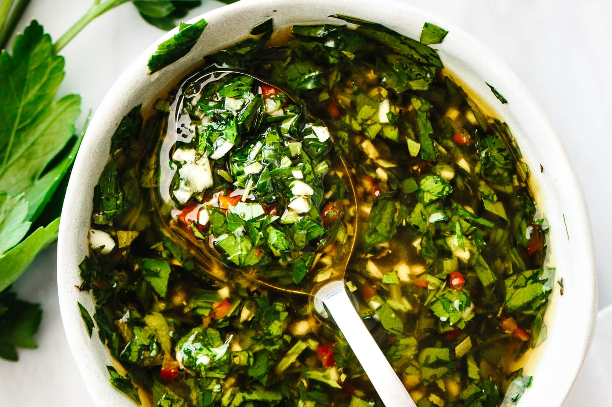

Chimichurri Sauce

A Chimichurri sauce is one that invokes a fresh flavor full of herbs and spice, able to be spooned over many different foods. Personally, I enjoy it over a grilled steak. It's combination of red wine vinegar and fresh herbs leaves an extremely enjoyable taste
and it's something I enjoy very often.
Hand chopping all the ingredients adds a variety of texture and heterogeneity that is sure to give anyone a dynamic experience, allowing it to stay a sauce rather than become
a paste.
Ingredients
- 1 shallot, finely chopped
- 1 jalapeño, finely chopped
- 3-4 cloves of garlic, thinly sliced or finely chopped
- 1/2 cup red wine vinegar
- 1 tsp. kosher salt
- 1/2 cup finely chopped cilantro
- 1/4 cup finely chopped flat-leaf parsley
- 2 Tbsp. finely chopped oregano
- 3/4 cup extra-virgin olive oil
Steps
- Combine shallot, chile, garlic, vinegar, and 1 tsp. salt in a medium bowl.
- Let sit 10 minutes.
- Stir in cilantro, parsley, and oregano.
- Using a fork, whisk in oil.
- Transfer 1/2 cup chimichurri to a small bowl; season with salt and reserve as sauce.
Back to recipes